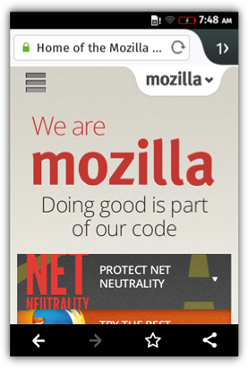
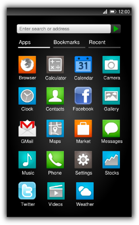
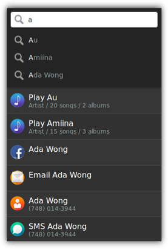
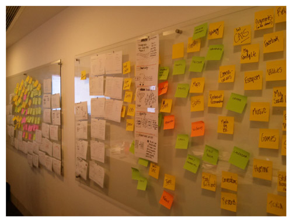
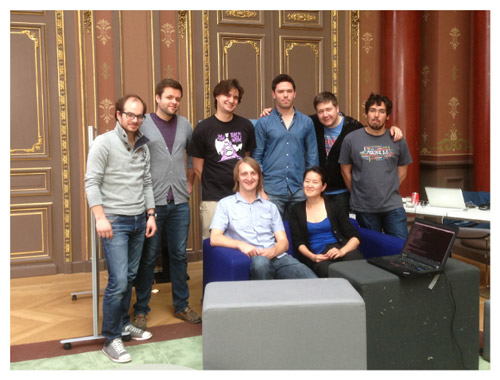
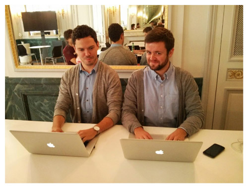
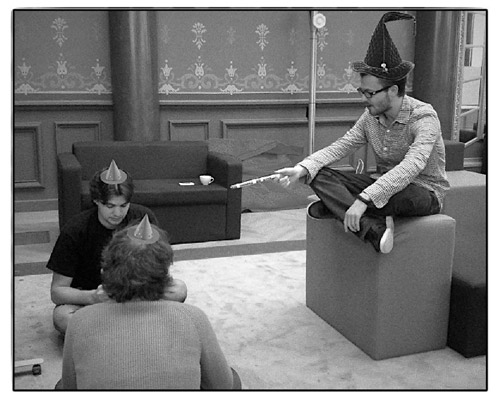
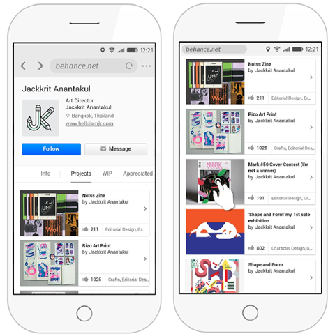

在看完了《為 Firefox OS 打造 Firefox 瀏覽器 (上)》和《(中)》之後，請跟著我們看完整個故事，也進一步了解 Firefox OS 的設計概念與未來走向。
1.x 版本
緊接著 Firefox OS 1.1 之後，我們也立刻著手 1.2 版專案並迅速成長。針對產品方面 (瀏覽器 App 就是其中之一)，我們重新組成自主的開發團隊。也就是說，我們現在有專屬團隊囊括設計師、工程師、測試工程師、產品管理人、專案管理人並各司其職。

2013 年 7 月瀏覽器團隊於倫敦參加 Work Week
Firefox OS 也採用和 Firefox 一樣的快速開發模式，每隔十二週就產出新的版本。我們很快就添加了新功能並嘗試提升效能，即使是剛於新興市場上發表的初階硬體，也期待能將其所有效能發揮到極致。

1.4 版本的瀏覽器 App
「Haida」
Firefox OS 1.0 版本足以證明我們能完全使用開放的 Web 技術，再次建構出其他智慧型手機上已存在的東西。瀏覽器 App 就是其中之一。
一旦我們證明上述概念可行，也讓實際裝置上市之後，就該設法找出 Firefox OS 日後的產品區隔特色。我們不想只是模仿現有的東西，也要讓後續產品展現網路的專屬優勢並擁有 Mozilla 的基因；這除了是體驗網路的最佳方式之外，也是 HTML5 得以活躍的平台。
從 2011 年底啟動專案 (尚未加入 UX 團隊) 起算，我自己建構的作品圖示如下。剛剛說過「智慧位址列」屬於 Firefox 瀏覽器的使用核心。我當時就建議要打造能讓系統泛用的智慧位址列，可搜尋整個裝置、所有 App 與其內容，並可於 OS 的任一處存取其功能。

2011 年 12 月的早期系統泛用型智慧位址列模型
在當時，大家認為這個概念對 1.0 版來說有點激進，而且我們必須專心開發行動 OS 所需的 Web 技術，所以 UX 相對來說較不重要。反之，我們需先以保守方式開發 UI，所打造的瀏覽器 App 絕大部分都近似 Android 版的瀏覽器。
其實我們在 Firefox OS 中建構了兩款瀏覽器。其一是瀏覽器 App，負責管理「網站」；另一個就是系統 App 中的檔案管理員，負責管理「Web App」。
但在現實的網路中，Web App 與網站之間並沒有很明確的區隔─兩者都是累積長期的使用者經驗打造而得，其中的界線較為模糊不清。
在 2013 年 3 月釋出 Firefox OS 1.0 之後，Josh Carpenter 為我引薦了 Gordon Brander 認識。這位 UX 成員的想法跟我很相近。但其實 Gordon 身為工程師與設計師的年資一樣久，目前只以 JavaScript 寫出基礎原型。

2013 年 3 月 Gordon 設計的 Rocketbar 原型
Gordon 和我開始固定每週開會，討論他的概念並開發「Rocketbar」專案。但這只能算是少數人有興趣的邊緣專案。
2013 年 4 月，UX 團隊在倫敦舉辦了研討會，討論 Firefox OS 的 UX 未來方向。我很幸運的也獲邀參加，而且不只是從旁觀摩而已，卻是實際參與議程。當時 Josh 努力維持「設計」與「工程」雙方之間的合作關係。
我們發想著如何提供 Web 的獨特經驗，又該如何提供特有的使用者經驗以充分發揮相關優勢。重點就放在「流動」，期待能透過超連結而悠遊於網海。網路本身並非「各自擁有清楚界線的許多 App」，而代表了各網站之間的瀏覽經驗以及互相流動的內容。

2013 年 4 月於倫敦的腦力激盪活動
接下來的一週裡，UX 團隊就概念部分提供了早期設計 (最後也將專案取名為「Haida」)，期待消弭 Web App 與網站之間的界線，並達到類似網路流動的專屬使用者經驗。這個概念最後不僅納入了「Rocketbar」─ 可跨整個 OS 存取的功能，並可完美抓取不同類型的網頁內容；也納入了「工作表」的概念 ─ 可將單一 Web App 切割為多個頁面，並於畫面邊緣滑動的即可順利切換。最後只要是能夠瀏覽、使用、設為書籤的即時 App，都能作為內容模型的基礎；不像以前必須先安裝一大堆 App 之後才能使用。
在 2013 年 6 月，一小群設計師與工程師在巴黎碰面，開發了 Haida 的初步原型，以能將某些前衛的概念化為實際介面，並讓使用者能開始測試。

2013 年 6 月位於巴黎的 Haida 原型開發活動

2013 年 6 月位於巴黎，Josh 與 Gordon 以近似的時尚衣著進行開發。

2013 年 6 月正於巴黎工作的魔法師
2.x 與未來展望
時間快轉到現在，瀏覽器團隊已經併入了「系統前端 (Systems Front End)」團隊。而 Haida 原型開發與使用者測試的進展緩慢，才剛準備進入主要的 Firefox OS 產品中。Haida 不會一次到位，而是隨著我們不斷更迭版本並學習期間，分成許多小部分持續完成。
在 Firefox OS 2.0 版將替換 1.x 版本的主畫面搜尋功能，另以 Kevin Grandon 所建構的新主畫面搭配新開發的搜尋經驗，並以「Rocketbar」為其基礎。到 2.1 版時，我們要將瀏覽器 App 完全整合至系統 App 之中，讓瀏覽器的分頁成為「工作表」，就在工作管理員 (Task manager) 的 App 旁邊；且可從 OS 的任一處存取「Rocketbar」。而 Rocketbar 將因應不同型態的網頁內容並抓取之，且只要是非使用中的狀態，也會縮回行動裝置的狀態列中。你同樣可於畫面邊緣滑動以切換 Web App 與瀏覽器視窗，最後 App 也會分割成多個工作表。

2014 年 7 月，Rocketbar 的 UI 模型分別處於展開與收攏狀態
在此同時，我們也看到 Web 標準隨著 manifests、packages、webviews 而不斷進化。而最近則針對 App 範圍的定義開始了一系列討論。
總歸一句
Firefox OS 的 1.x 版即是以 Web 技術所打造。但如果提到安裝/使用 App 與瀏覽網路的經驗，仍與其他行動平台有許多相似之處。你可期待看到 Web 基因透過獨特的使用經驗深植於 UI 之中，並將打破 Web App 與網站之間的界線，讓你自由自在的悠遊於兩者之間。
Firefox OS 開放源碼專案，是完全以開放的方式開發而得。如果你也想對 Gaia 有所貢獻，請參閱 MDN 上的《Developing Gaia》頁面。如果你想開發自己的 HTML5 App 並於 Firefox OS 執行，可參閱《應用程式中心》。